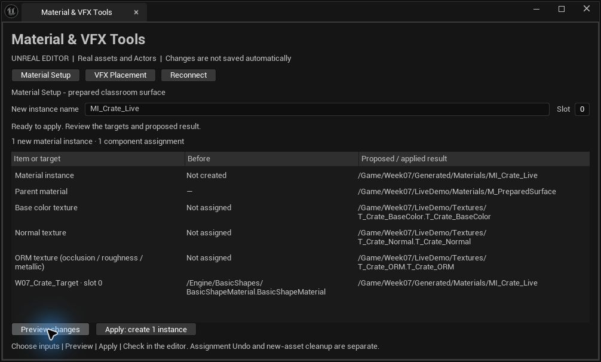
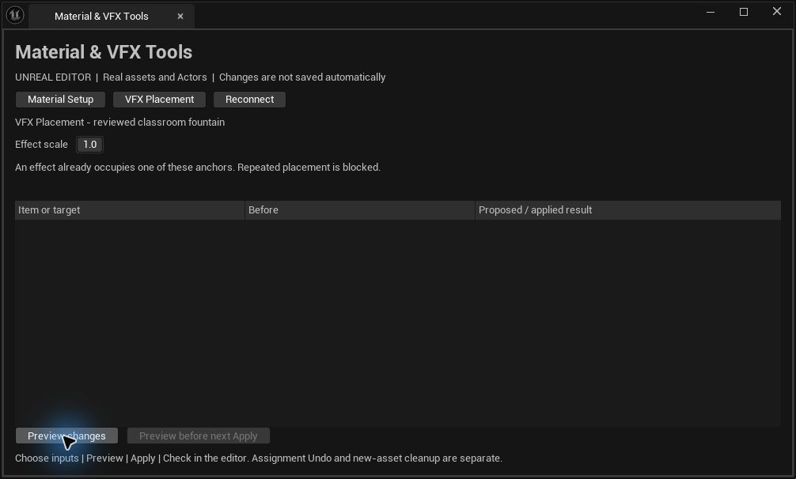
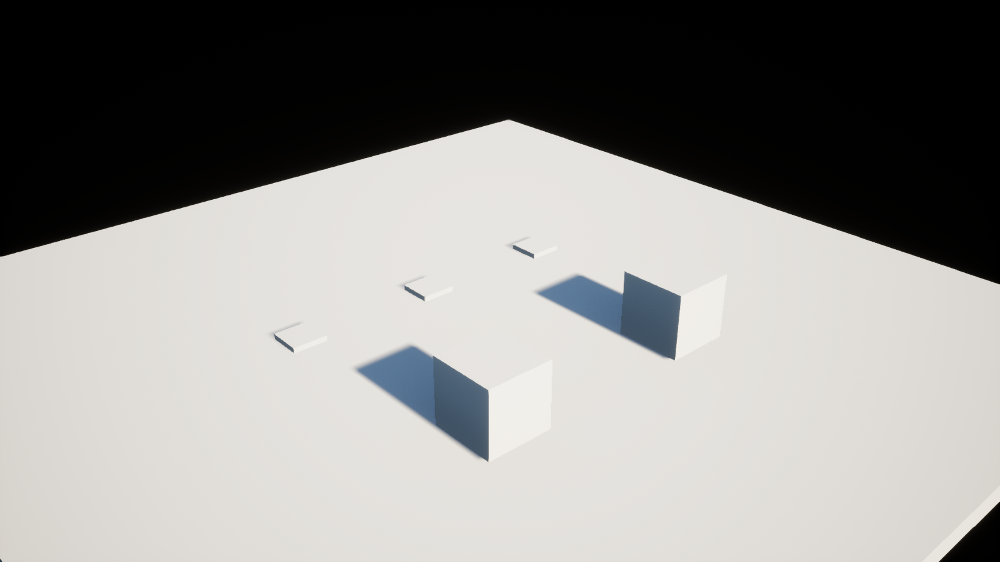

Live Material and VFX demo
Earlier practice-mode walkthrough
Rehearsed in the running Unreal 5.7.4 editor. Use this offline walkthrough if the live demo stalls for more than 30 seconds. These are discrete captured states, not a live connection or screen recording.
STEP 1 OF 7 · ACTUAL UNREAL 5.7.4 CAPTURE
Predict the scope

Two plain cubes share one mesh. Only the near target cube is selected. Three prepared textures are selected separately in the Content Browser.
Which cube should change? What must stay unchanged?
STEP 2 OF 7 · ACTUAL UNREAL 5.7.4 CAPTURE
Review the material plan

The native editor preview proposes one new material instance and one component override at slot 0. The parent and three texture mappings are visible. Preview does not mutate the scene.
Point to the destination, target and slot before allowing Apply.
STEP 3 OF 7 · ACTUAL UNREAL 5.7.4 CAPTURE
Inspect the actual result

The target cube is blue. The protected cube stays plain. The live rehearsal checked texture readback and confirmed the shared mesh material remained unchanged.
Does the success message alone prove that scope was respected?
STEP 4 OF 7 · ACTUAL UNREAL 5.7.4 CAPTURE
Review the VFX plan

After material Undo, select three tagged markers. Preview proposes exactly three fountain placements at their positions and rotations. Scale is 1.0.
What will happen if we select the same markers and run again?
STEP 5 OF 7 · ACTUAL UNREAL 5.7.4 CAPTURE
Inspect the three effects
The running Unreal editor produced three visible fountains. The tool uses the prepared Niagara system and does not edit spawn rate or graph logic.
What did this demonstrate? What evidence would a performance claim still need?
STEP 6 OF 7 · ACTUAL UNREAL 5.7.4 CAPTURE
A repeat is blocked

Preview rejects occupied anchors. Apply is unavailable. No second batch is created. This is an actual native-panel capture.
What recovery instruction would help the user?
STEP 7 OF 7 · ACTUAL UNREAL 5.7.4 CAPTURE
Verify recovery

Undo removes the three placed effects. The two cubes and three pedestals remain. Material Undo restores the assignment, but the newly created instance requires separate inspection and cleanup.
State a retest with input, action, expected result and protected scope.
Before teaching
Run Week07UnrealPython/Scripts/launch_live_demo.ps1. It opens the isolated W07_MaterialVFXLab map and checks the baseline. If already open, use that editor. Open Tools → Material & VFX Tools. Native plugin binaries were built for this Windows UE 5.7.4 installation.
Select W07_Crate_Target in the Outliner and all three textures in Content/Week07/LiveDemo/Textures. Wait for Content Browser selection to update. Use slot 0 and a fresh MI_ name. For VFX, select the three W07_VFXAnchor Actors, then Preview.
Optional Unreal Python console helpers, one at a time:
from week07_tooling.editor import live_demo
print(live_demo.preflight())
live_demo.select_material()
live_demo.select_vfx()
PySide alternative: import week07_tools as w7; w7.show_assistants(). Both interfaces use the same workflow backend. The native panel has no Qt requirement. The browser fallback has neither dependency.
Keep the existing teaching slot
| Clock | Sequence |
|---|
| 3:49–3:56 | Material prediction, Preview, Apply, protected-scope check, duplicate-name block and Undo. |
| 3:56–3:58 | Brief UI comparison using the existing Stage 1/2/3 visuals. No second full demo. |
| 3:58–4:02 | Three-anchor VFX Preview/Apply, repeat block, Undo and performance boundary. Handoff at 4:02. |
Recovery
For invalid inputs, read the message and correct the selection. If selection changes after Preview, preview again. Native session expired: Reconnect. PySide failed: close and reopen. Stop after one 30-second recovery attempt and use the captures above.
Use Edit → Undo only when its label matches the operation you intend to revert. Undo restores material assignments but keeps the new instance asset. Undo removes the VFX batch. If history is unclear, reopen the saved classroom map and decline saving only rehearsal map edits. Inspect references before deleting your individual rehearsal instance. Do not use Save All or folder deletion as a reset.
What the rehearsal establishes
Both native UI workflows and live PySide workflows ran successfully. Checks covered texture readback, the protected cube and shared mesh, three exact placements, repeated placement, Undo, missing/incomplete inputs and stale selection. The test found and fixed the UE 5.7 texture setter’s misleading return value by checking actual parameter state.
The reviewed fountain has one lightweight GPU sprite emitter at 90 particles/second and 1.4–1.75 second lifetimes. The classroom preset allows three new placements with scale 0.25–1 and 100 cm spacing. Scalability settings bound instance counts and distance. No target-hardware frame-time or packaged-runtime claim is made.
Rehearsal evidence record · Live PySide material result · Live PySide VFX result
Classroom handouts
Editable Word documents follow the current Week 1 Lab handout design. Lab 1 is one page. For peer review, print preparation page 1, three copies of review page 2, and synthesis page 3 per student.